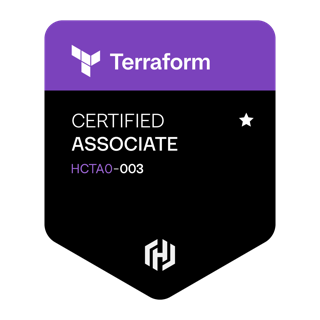
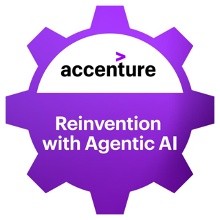
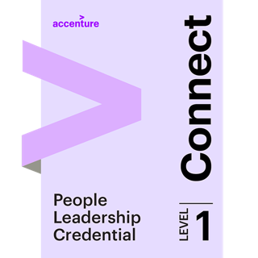
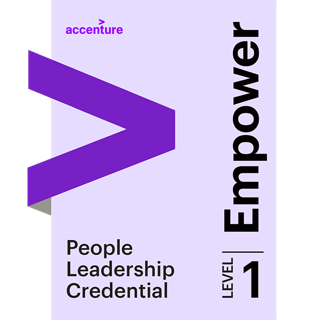

Role
Portfolio
@donatmolnar
Cloud & DevOps engineer building reliable, secure and cost-aware platforms on AWS and Kubernetes. Ten years in IT — from leading a support team through automating the delivery lifecycle to designing scalable microservice architectures.
DevOps Engineer Cloud Engineer SRE Platform Engineer DevSecOps Solutions Architect
- Years in IT
- 10+
- Years in cloud & DevOps
- 5+
- Saved yearly via cost optimization
- ~$80k
01 / Journey
Roadmap so far
Roles and credentials, in order.
-
2016
-
2021
Role · current
Cloud DevOps Engineer
-
2022
Certification
AWS Certified Solutions Architect – Associate
-
2024
Certification
CKA — Certified Kubernetes Administrator
-
2024
Certification
HashiCorp Certified: Terraform Associate
-
2026
Certification
Claude Certified Architect – Foundations
02 / Impact
Major achievements
Platform work that moved reliability, security and cost in the right direction.
~$80k/year
Saved annually through cost optimization
Moved off Bitnami onto official OSS solutions, and cut spend further with dynamic workload handling, storage retention policies and automated cleanup processes.
On-prem → AWS migration
Moved legacy on-premise workflows onto AWS.
Java runtimes → Kubernetes
Containerized plain Java runtimes and moved them onto Kubernetes.
Monolith → microservices
Broke a monolithic architecture into independently deployable microservices.
High availability & stateless containers
Redesigned workloads to be stateless and horizontally scalable.
Full SDLC automation with Jenkins
Build, test, release, deploy and operate — end to end, hands off.
TLS & encryption rollout
Encryption in transit and at rest across services.
Automated security scanning & reporting
SAST/DAST and image scanning wired into the pipeline, with reporting.
Monitoring & observability tooling
Metrics, logs and traces in place — so failures are visible before users find them.
03 / Toolbox
Skills & technologies
What I design, build and run day to day.
AWS
- IAM
- VPC
- Route 53
- EKS
- EBS
- EFS
- S3
- RDS
Azure
- Service Bus
GCP
- GKE
- GCR
Infrastructure as Code
- Terraform
GitOps
- ArgoCD
Orchestration
- Kubernetes
Version control
- Git
CI/CD
- Jenkins
Full SDLC automation — build · test · release · deploy · operate
Containerization
- Docker
- containerd
Web servers
- NGINX
- Apache
Monitoring
- Prometheus
- Grafana
Architecture
- Microservices
- High availability
- Stateless workloads
Security
- SAST / DAST
- OWASP
- Trivy
Observability
- OpenTelemetry
- FluentBit
- VictoriaLogs
- VictoriaMetrics
Leadership
- Mentoring
- Motivating
- Lecturing
04 / Verified
Certifications
Every badge below is independently verifiable on Credly.
AWS Certified Solutions Architect – Associate
Amazon Web Services
CKA: Certified Kubernetes Administrator
The Linux Foundation

HashiCorp Certified: Terraform Associate (003)
HashiCorp
Claude Certified Architect – Foundations
Anthropic
- LFS158: Introduction to KubernetesThe Linux Foundation
-

Reinvention with Agentic AIAccenture - AWS Partner: Sales AccreditedAmazon Web Services
- AWS Partner: Migration Acceleration Program AuthorizedAmazon Web Services
- AWS Partner: Migration Sales EssentialsAmazon Web Services
- AWS Partner: Generative AI EssentialsAmazon Web Services
-

People Leadership – Chapter 1: ConnectAccenture - People Leadership – Chapter 2: DevelopAccenture
-

People Leadership – Chapter 3: EmpowerAccenture
05 / Contact
Let's talk
Open to conversations about DevOps, cloud, SRE and platform engineering work. LinkedIn is the fastest way to reach me.